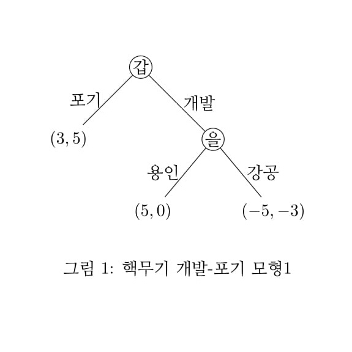
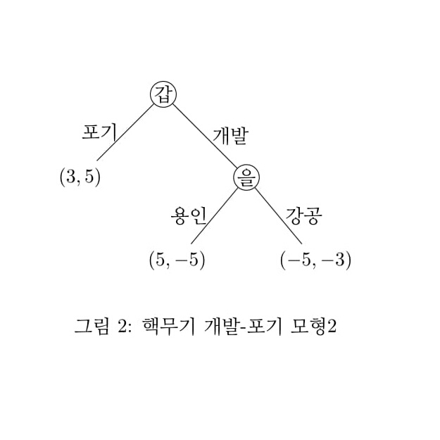

게임이론의 해 중에 부분게임 완전균형 (subgame perfect nash equilibrium) 이라는 것이 있다.1
갑국과 을국의 핵무기 개발을 둘러싼 긴장을 게임이론으로 설명하면 다음과 같다.
갑은 핵무기를 개발할지, 아니면 이 돈으로 다른 사업에 쓸지를 고려하고 있다.
갑이 핵무기 개발을 포기하고 다른 곳에 투자한다면 그 댓가로 을에게 일정부분 보상을 받아 갑은 3의 효용을, 을은 전쟁을 회피하여 5의 효용을 얻는다.
갑이 핵무기를 개발한다면 을은 이에 강력 대응과 이를 용인하는 두 가지 선택안이 있다.
을이 강력 대응한다면 쌍방간의 전쟁으로 갑은 -5, 을은 -3 의 효용을 얻는다.
만약 을이 갑의 위협에 굴복하여 이를 용인한다면 갑은 5, 을은 0 의 효용을 얻는다.
이 상황을 트리형 게임으로 묘사하면 (그림 1)과 같다.

이 게임에서 최선의 선택은 무엇인가?
이 게임에서 갑의 전략은 핵무기 개발, 또는 포기 두 가지다.
을의 전략은 갑의 선택에 영향을 받으므로 i) 갑의 포기시 무대응, 갑의 개발시 강공, ii) 갑의 포기시 무대응, 갑의 개발시 용인의 두 가지다.
을 갑 |
포기-무대응 개발-강공 |
포기-무대응 개발-용인 |
|---|---|---|
| 포기 | (3, 5) | (3, 5) |
| 개발 | (-5, -3) | (5, 0) |
이 게임의 내쉬 균형은 두 개다.
i) 갑의 포기, 을의 갑의 개발시 강공,
ii) 갑의 개발, 을의 갑의 개발시 용인.
<표 1>에서 회색으로 표시된 칸이다.
각각의 칸에서 상대가 다른 전략으로 이탈할 유인이 없음을 확인하기 바란다.
그런데 첫 번째 내쉬균형은 비합리적임을 알 수 있다.
첫 번째 균형은 표에서 세로로 비교하여 갑이 핵무기 개발시 을이 강공을 취할 것을 두려워하여 더 나은 선택을 한 것이다.
그러나 (그림 1)에서 볼 수 있듯이 막상 갑이 핵무기를 개발하면 을은 이를 용인하는 것이 최선이다.
반대로 두 번째 균형은 앞과 같은 비합리성이 없다.
게임이론에서는 후자의 균형을 부분게임 완전균형이라 부른다. 보다 정확히는 전체 게임과 모든 부분게임에서 내쉬균형을 이루는 전략조합이다.
게임나무에서 갑이 개발을 선택한 뒤의 을의 의사결정 노드는 하나의 부분게임을 이룬다.
부분게임에서 을은 강공시 -3, 용인시 0 을 비교하여 최선의 선택(균형)은 용인이다.
이제 전체 나무를 봤을 때 갑은 포기와 을의 용인을 비교하면 된다.
이 경우 갑은 포기시 3, 개발시 5를 얻으므로 개발이 최선이다. 따라서 갑은 개발, 을은 갑의 개발시 용인이 균형이 되는 것이다.
이와같이 역으로 추론하여 게임의 해를 구하는 방법을 역방향추론법(backward induction)이라 부른다.
이와 같은 게임의 결론을 실제 상황과 비교하면 어떨까?
갑국이 핵무기를 개발하는 것이 최선 선택이라는 것은 현실의 국제사회의 요구와 반대되는 결론이다.
그런데 게임이론을 현실에 적용하기 위해서는 보수(효용)값의 선정에 신중해야 한다.
갑국은 위와 같은 상황을 설정하고 핵무기 개발을 강행하는 것일 수 있다. 우리가 핵무기를 개발하고 나면 을국은 싸움을 두려워하여 이를 용인할 것이라는.....
그러나 을국 및 국제사회는 다르게 판단할 수 있다. 갑이 핵무기를 개발하더라도 핵위협에 굴복하지 않을 것이라고 판단할 수 있다.
이 경우 을의 보수는 갑이 예상한 값과 다를 것이다.
예를 들어 다음의 그림을 보자.

보수값을 용인시 (5, -5), 강공시 (-5, -3)로 바꿨다.
이 경우 을은 강공 전략을 구사하는 것이 최선이고 갑은 3과 -5를 비교하여 포기가 최선이다. 즉 갑 포기, 을 개발시 강공이 부분게임 완전균형이 되는 것이다.
이상과 같이 게임의 보수를 어떻게 평가하는가에 따라 게임의 결과가 달라질 수 있다.
이 점이 게임이론을 현실에 적용했을 때 가장 신경써야 되는 부분이다.
결론적으로 핵무기 개발을 둘러싼 양국의 현실의 상황은 이렇게 누군가가 상황을 오판하고 있기 때문에 발생하는 것이다.
연구노트에는 부분게임 완전균형의 의미를 보여주는 대표적인 예로 centipede game이 소개되어 있다. 두 경기자는 번갈아 가며 게임을 계속할지(A) 아니면 지금 끝낼지(D)를 결정한다. 게임을 계속하면 전체 파이는 커지지만, 자신의 차례에 지금 멈추면 상대보다 조금 더 유리한 몫을 받을 수 있는 구조다.
연구노트의 예를 마지막 노드부터 역으로 계산하면 다음과 같다.
따라서 역방향 추론은 첫 기회에 바로 게임을 끝내는 전략을 유일한 부분게임 완전균형으로 예측한다. 그런데 두 사람이 몇 차례만 더 계속하면 양쪽 모두 더 높은 보수를 얻을 수 있으므로, 이 결과는 파레토 효율성의 관점에서 매우 낮아 보인다.
연구노트는 이 지점에서 실험 결과도 언급한다. 실제 실험에서는 많은 참가자가 이론이 예측하는 첫 노드의 즉시 종료를 선택하지 않고 몇 번은 계속 진행한 뒤 멈추는 부분적 협조(partial cooperation)를 보인다는 것이다. 즉 SPNE는 순차적 합리성을 매우 엄격하게 적용한 기준이지만, 실제 인간 행동을 언제나 정확히 예측하는 것은 아니라는 점을 보여주는 예다.
이 사례는 부분게임 완전균형을 “현실에서 반드시 그렇게 행동한다”는 예언이라기보다, 완전한 합리성과 그 합리성에 대한 공통지식(common knowledge)을 끝까지 적용했을 때의 논리적 기준점으로 이해해야 한다는 점을 잘 보여준다.
■ von-Stackelberg 복점 모형
■ 진입저지(entry deterrence)모형
■ 협상게임(bargaining game)
vault의 「배수진 전략」은 부분게임 완전균형을 직관적으로 보여주는 예다. A국이 B국의 섬을 침공할지 결정하고, 침공 뒤 B국은 싸우거나 다리로 퇴각할 수 있다고 하자.
침공이 실제로 일어난 뒤에는 B에게 싸움보다 퇴각이 낫다. \(-1>-2\)이기 때문이다. 따라서 “침공하면 끝까지 싸우겠다”는 말만으로는 신뢰할 수 없는 위협(non-credible threat)이 된다.
그런데 B가 미리 다리를 불태워 퇴각 선택 자체를 없애버리면 상황이 바뀐다. A는 침공하면 \(-2\), 침공하지 않으면 0을 얻으므로 침공하지 않는 쪽을 선택한다. 즉 B는 자신의 미래 선택지를 일부러 줄여서 현재의 협상력을 높인다.
이것이 commitment의 역설이다. 선택지가 많다고 항상 유리한 것은 아니다. 때로는 스스로 퇴로를 없애는 행동이 위협을 신뢰할 수 있게 만들어 상대의 행동을 바꾼다.